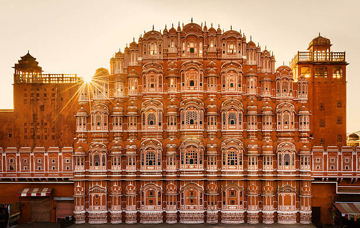
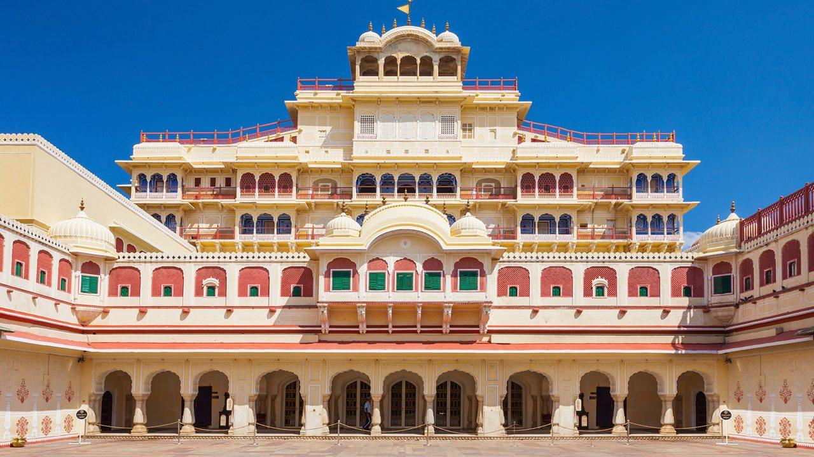
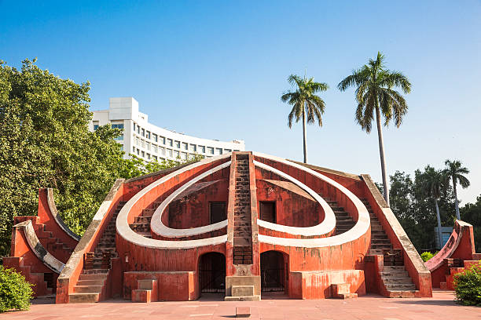
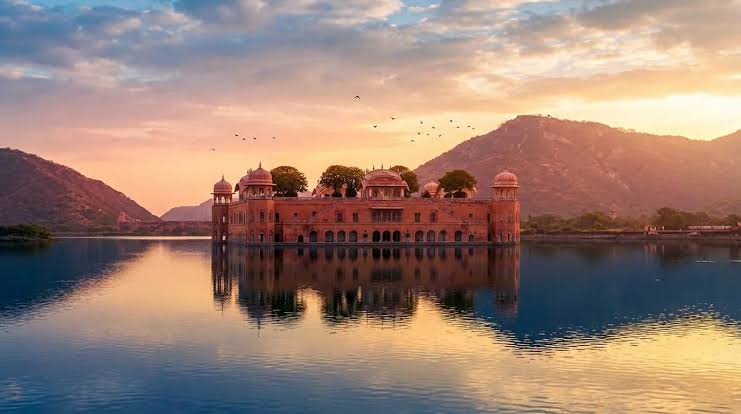
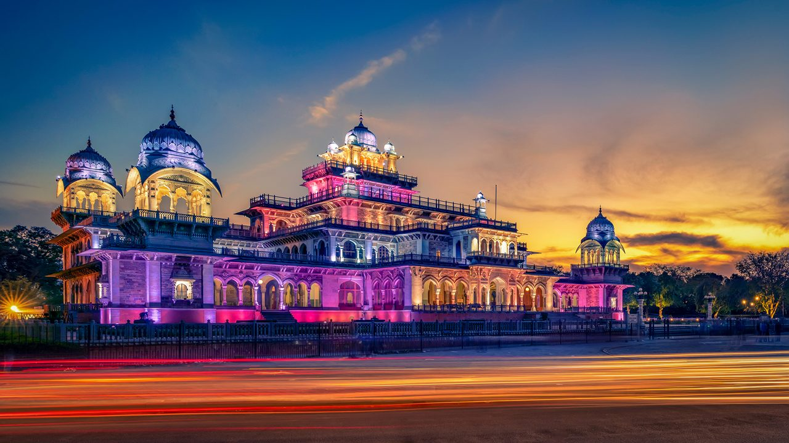

Tourist PLaces in Jaipur
Hawa Mahal
The Hawa Mahal, or "Palace of Winds" in Jaipur, is an iconic 5-story honeycomb-shaped palace built in 1799 by Maharaja Sawai Pratap Singh and designed by Lal Chand Ustad. Constructed entirely from red and pink sandstone, it features 953 intricate, lattice-screened windows (jharokhas) that allowed royal women to observe street life unobserved.

Amber Fort
Amber Fort (or Amer Fort) is a magnificent UNESCO World Heritage complex located 11 km from Jaipur, Rajasthan. Built in 1592 by Raja Man Singh I, it served as the royal capital of the Kachwaha Rajputs. The fort brilliantly blends Rajput and Mughal architectural styles using pale yellow sandstone and white marble.

City Palace
The term "City Palace" usually refers to the grand royal complexes in Jaipur or Udaipur, Rajasthan. They are sprawling fort-palaces renowned for their massive courtyards, stunning museums, and masterful blend of Rajput and Mughal architecture. Many of these palaces still house the descendants of the original royal families.

Jantar Mantar
The Jantar Mantar is a collection of astronomical observatories built in the early 18th century by the Rajput king Sawai Jai Singh II. Meaning "calculation instrument," it features monumental masonry devices designed to track celestial bodies, predict eclipses, and measure local time without telescopes

Jal Mahal
Jal Mahal (or "Water Palace") is a stunning architectural marvel in Jaipur, Rajasthan, seemingly floating on the Man Sagar Lake. Originally built as a royal hunting lodge in the 18th century, it is famous for its unique design: four of its five stories remain submerged underwater, leaving only the top level visible

Nahargarh Fort
Perched on the edge of the Aravalli Hills in Rajasthan, Nahargarh Fort was built in 1734 by Maharaja Sawai Jai Singh II to defend Jaipur. Originally named Sudarshangarh, it was later dubbed Nahargarh, meaning "abode of tigers". It features the stunning Madhavendra Bhawan, a two-storey royal summer retreat featuring 12 identical suites.

Albert Hall Meuseum
The Albert Hall Museum, located in the lush Ram Niwas Garden in Jaipur, is Rajasthan's oldest museum. Designed by Sir Samuel Swinton Jacob in the Indo-Saracenic style, it houses a vast collection of 19,000+ artifacts, including a 2,300-year-old Egyptian mummy, the Persian Golden Carpet, and royal weaponry.
